Deadlands

the Deadlands is a Primordial 类型 生物群系 that can be found on 多种星球 in 绝地潜兵 2.
描述
“灰色是这颗星球的主色，唯有从彷如寄生一般的奇异裸露地表长出的紫罗兰色花朵能打破这股死气沉沉的格调。
Like the other primordial biomes, the Deadlands 特性 dense jungles full of plants and ferns, all of them being ash-colored mixed with 轻型 shades of purple. Unlike the other primordials, the Deadlands 特性 trees with drooping grey leaves. Large clearings also fill the 浮出地面, full of ash-grey grass, purple flowers and rock formations. The 行星 also features beaches, oceans, the occasional lake, and distant 山 ranges.
The skies are 通常 grey colored with a thick grey fog filling the air. On 部分星球, the skies and the fog can turn a red color thanks to a nearby red 毒气 giant 行星.
浮出地面 Variations
Metropolises
Metropolises within the Deadlands generate green earthly 地形 with the 生物群系's usual grey grass blades. Earth-like trees with green-grayish leaves will also be found in certain parks alongside purple and pink ferns.
Metropolises will also be 极其 foggy, as the 生物群系 通常 is.
The Gloom
Within The Gloom thanks to the 生物群系's neutral white/grey color, the 大气层 and the fog becomes significantly more yellow than usual, reflecting onto the water and turning it into a yellow color as well. The ground and foliage itself don't change color, however they end up also looking yellow thanks to the 大气层. Changes incited by the Gloom are much more noticeable at night.
Environmental Conditions
 浓雾
浓雾
环境危害
- The deadlands 特性 Spike Plants and Lava Pits.
- The deadlands also have a hidden trait; unmarked Damaged Hellbombs may appear in any 难度. In any other 生物群系, this 特性 is 有限 to
 挑战 and above.
挑战 and above.
天气
- Foggy
- Foggy 天气 is the only 天气 for the deadlands, featuring thick 重型 fog that hides nearly everything past 200 meters.
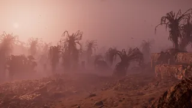
图集
普通
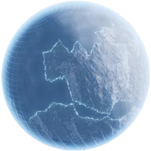
Hologram of a Deadlands 行星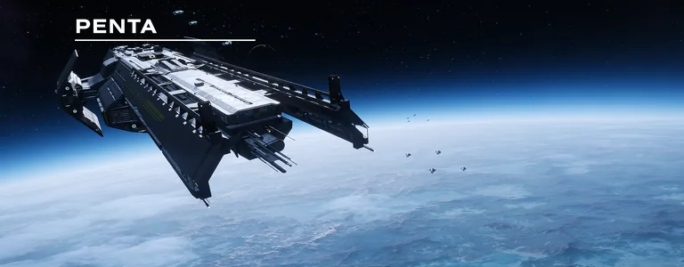
轨道武器 shot of a Deadlands 行星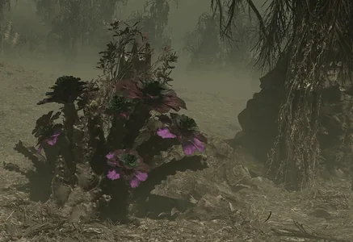
A grey plant with purple flowers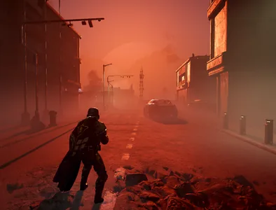
日出 in a Deadlands 生物群系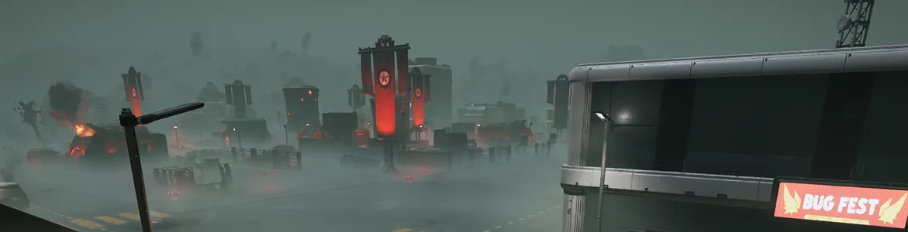
彭塔殖民地的图像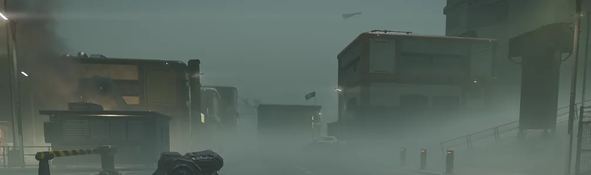
彭塔殖民地的图像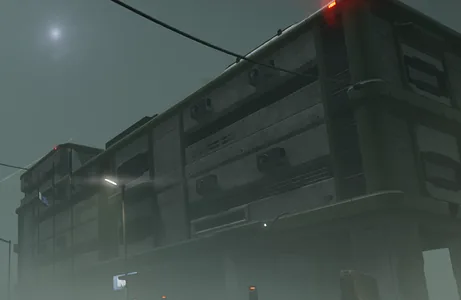
彭塔殖民地的图像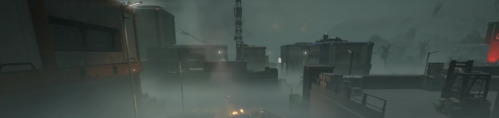
彭塔殖民地的图像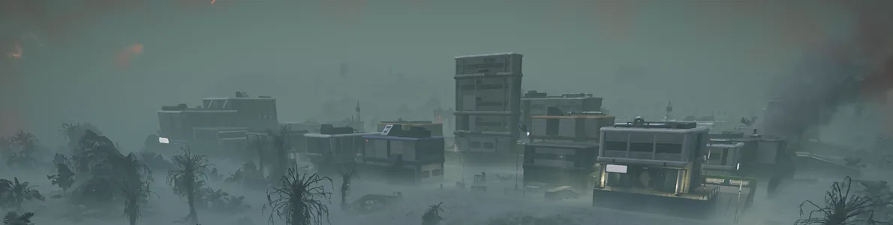
彭塔殖民地的图像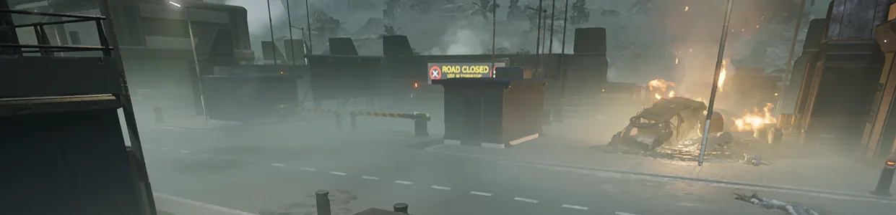
彭塔殖民地的图像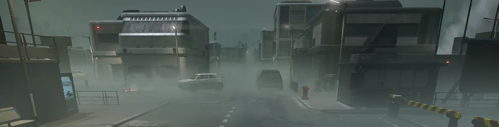
彭塔殖民地的图像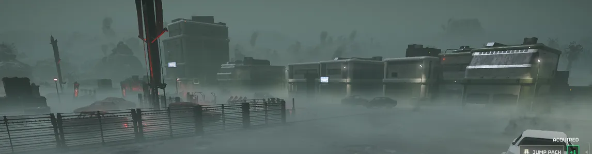
彭塔殖民地的图像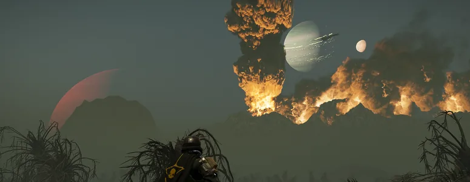
Pretty Night Sky on Alaraph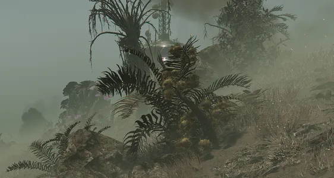
Thorn Plant on Alaraph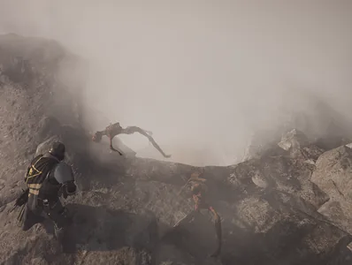
Skeleton found near Lava Pit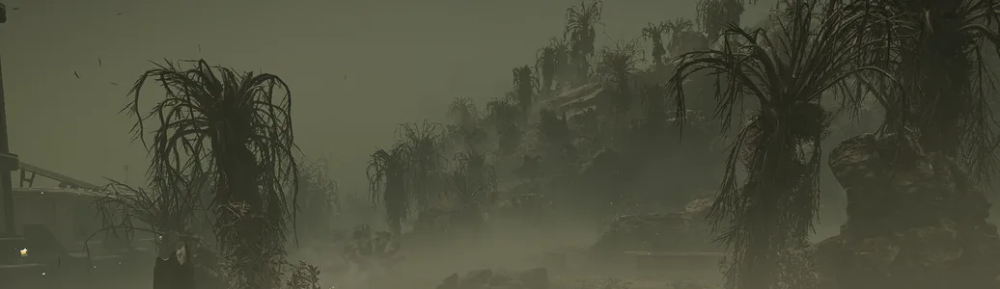
Wide Shot of Alaraph's Wilderness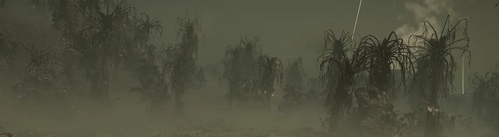
Wide Shot of Alaraph's Wilderness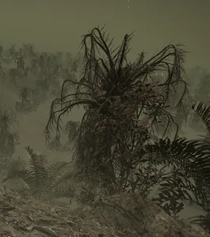
Shot of Alaraph's Wilderness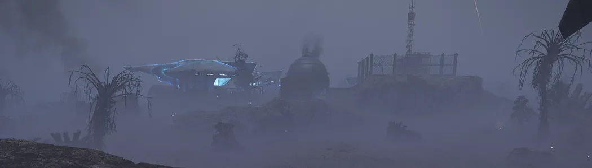
光能族营地 on Alaraph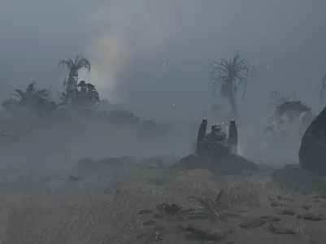
Malfunctioning Hellbomb on Alaraph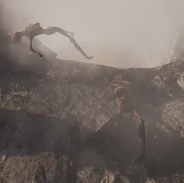
Skeleton found.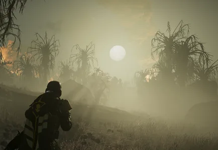
Moon Rising on Alaraph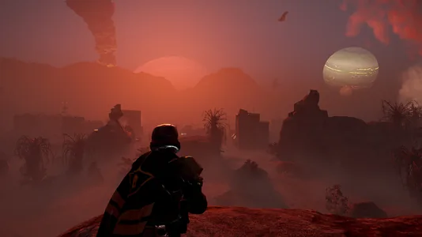
日出 on Alaraph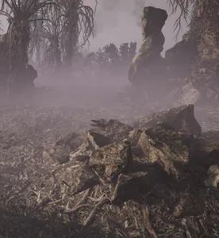
Another Shot of Alaraph's wilderness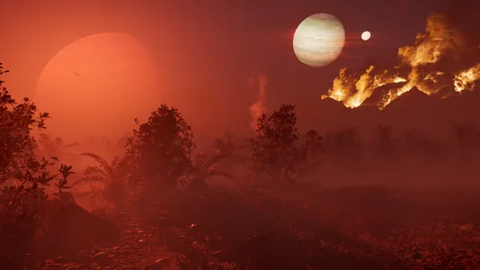
The red-shaded 浮出地面 of Aesir Pass, reflected from the nearby giant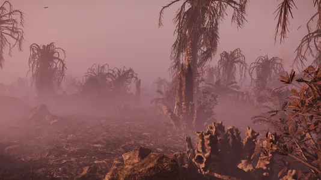
Deadlands 浮出地面- Foggy dead jungle
Metropolis
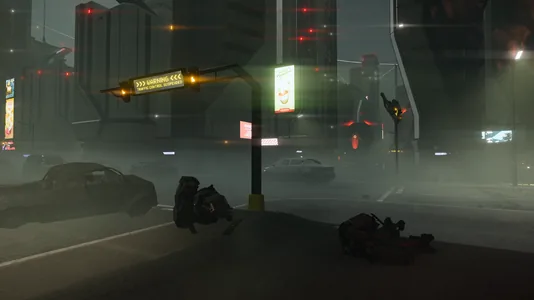
机器人 防御 city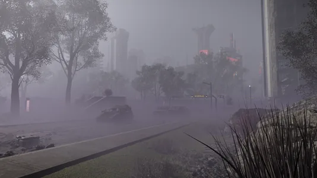
光能者 防御 city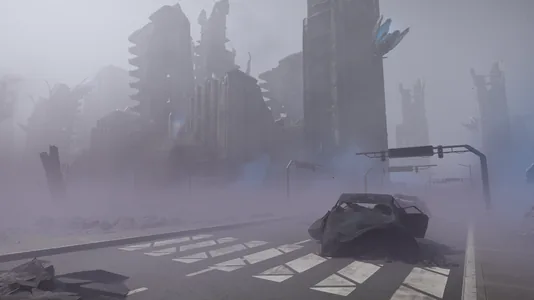
光能者 controlled city
The Gloom
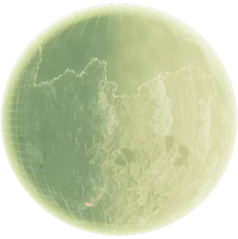
Hologram of a Deadlands 行星 inside The Gloom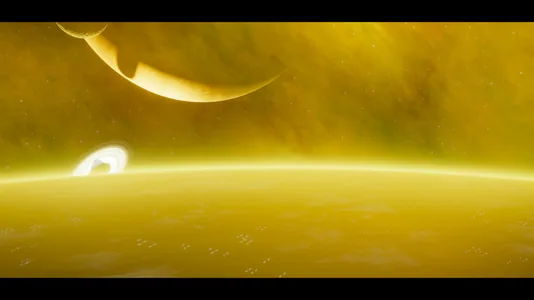
Orbit of a deadlands 行星 inside The Gloom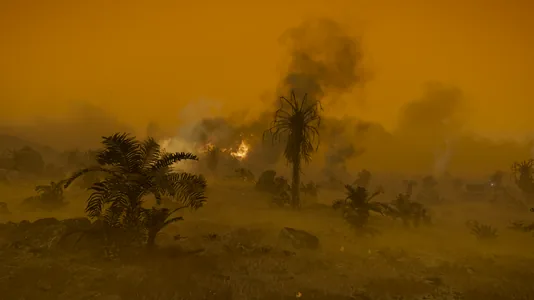
Some foliage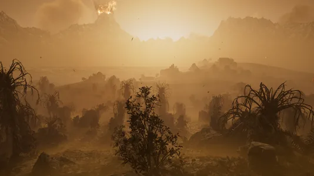
日出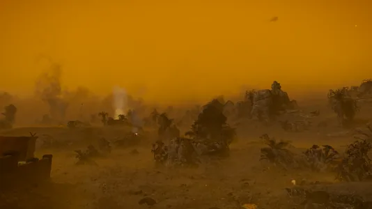
Night time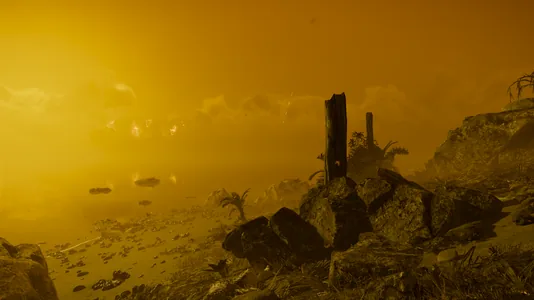
Beachside
Planets
 Aesir Pass
Aesir Pass- Penta
- Sangis
- Ain-5
- Skat Bay
- Alaraph
- Veil
- Troost
- Haka
 Nivel 43
Nivel 43- Pandion-XXIV
- Cirrus
- Mort
 UVP Beta - Void
UVP Beta - Void